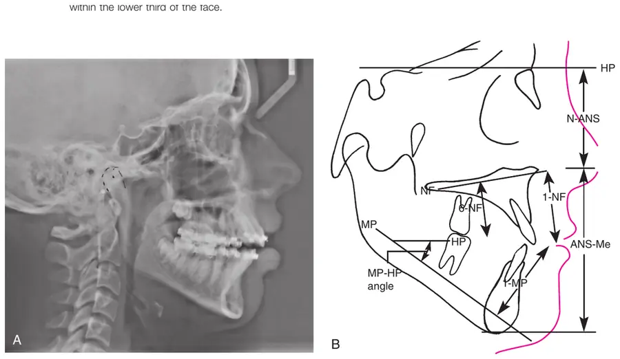
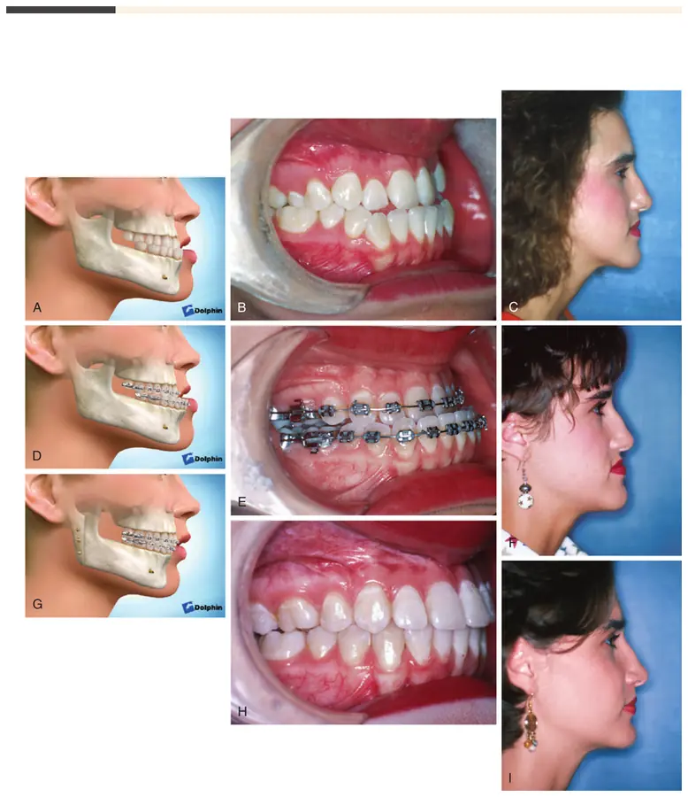

نسخه استخراجشده؛ ترجمه یا تأیید علمی انجام نشده است. وضعیت: captured
چه اندازه از جمعیت به جراحی نیاز دارند؟ دادههای NHANES III، که میان ۱۹۸۹ تا ۱۹۹۴ از نمونهای از ۱۴۰۰۰ نفر ۸ تا ۵۰ ساله گردآوری شد، اینها را نشان میدهند:

و جمعبندی: تقریباً ۲٫۷ درصد جمعیت آمریکا میتوانند ناهنجاری دنتوفاشیالی داشته باشند که به مالاکلوژن کمک میکند و برای اصلاح به درمان جراحی نیاز دارد.
و یک هشدار روششناختی: چون بسیاری از بیماران جبرانهای دندانی برای ناهنجاریهای رشد اسکلتی دارند، این مطالعه احتمالاً شدت ناهنجاریهای اسکلتی را کمتر از واقع برآورد میکند.
و علل ناهنجاری دنتوفاشیال — پنج دسته: گرایشهای ارثی، مشکلات پیش از تولد، وضعیتهای سیستمیک که حین رشد رخ میدهند، تروما، و تأثیرات محیطی.
و اصول کلی رشد صورت — سه نکته:
و آن استعارهی کلیدی: ماگزیلا و مندیبل با بازسازی یا آپوزیشن و تحلیل تفاضلی استخوان رشد میکنند و تغییراتی در سه بُعد میسازند. اِنلو و هانس این پدیده را «جابهجایی ناحیهای» مینامند، با مجموعهی ماگزیلا-مندیبل که در جهت پایین و جلو مانند یک «هرم در حال گسترش» بزرگ میشود.
و تعریف الگوی رشد: جهت و مقدار رشد، الگوی رشد یک فرد را مشخص میکنند — و تغییر در الگوی رشد یا در سرعتی که این رشد رخ میدهد، میتواند به مورفولوژی اسکلتی غیرطبیعی صورت و مالاکلوژن همراهش بینجامد.
و تأثیرات ژنتیک و محیط: تأثیر ژنتیک بهیقین در ناهنجاریهای دنتوفاشیال نقش دارد، و الگوهای وراثت مانند گرایش خانوادگی به مندیبل پروگناتیک یا کمرشد اغلب دیده میشوند.
ولی یک محدودیت مهم: ماهیت چندعاملی تکامل صورت، پیشبینی الگوی ارثی یک ناهنجاری صورتی معین را ناممکن میسازد.
و سندرمها: رشد غیرطبیعی صورت و مالاکلوژنهای همراهش گاهی با ناهنجاریها و سندرمهای مادرزادی همراهاند — و برخی از این سندرمها مانند میکروزومی همیفاشیال و دیزوستوز مندیبولوفاشیال (سندرم تریچر کالینز)، به ناهنجاریهای جنینی سلولهای ستیغ عصبی مربوطاند.
روشن است که همهی مالاکلوژنها به اصلاح با جراحی نیاز ندارند. وقتی اختلاف اسکلتی کمینه باشد و جبران ارتودنتیک به اکلوژن کافی برسد، جراحی لازم نیست.

ولی چه زمانی جراحی وارد میشود؟ وقتی جبران به اکلوژن کافی میرسد ولی زیبایی صورتی یا دندانی ضعیف است، یا پیشآگهی بلندمدت نگهداری پس از درمان ضعیف است — این بیماران باید برای جراحی همراه با درمان ارتودنتیک در نظر گرفته شوند.
و زمانبندی درمان: درمان ناهنجاری پایدار بزرگسال میتواند بدون تأخیر آغاز شود — ولی پرسشهایی دربارهی بهترین شیوهی ادارهی کودک در حال رشد که ناهنجاری دنتوفاشیال در حال تکاملی دارد، مطرح میشوند.
و حالا مهمترین مفهوم این درس — دکامپنسیشن: ارتودنسی پیش از جراحی بر بهبود زاویهی دندانها روی استخوان زیرین متمرکز است، و پس از آن مشکلات اسکلتی اصلاح میشوند.
یعنی چه؟ بیمار کلاس II با جبران، انسیزورهای پایین پروکلاینشده و انسیزورهای بالای صاف دارد. ارتودنسی پیش از جراحی این جبران را برمیدارد — پس در نگاه نخست، مالاکلوژن بدتر بهنظر میرسد. ولی همین، جراح را قادر میسازد فک را به موقعیت درست ببرد.
و گامهای اساسی آمادهسازی ارتودنتیک — سه گام:
و مدتش چقدر است؟ مقدار ارتودنسی پیش از جراحی میتواند متفاوت باشد، از گذاشتن دستگاه با حرکت کمینهی دندانی در برخی بیماران، تا تقریباً ۱۲ تا ۱۸ ماه درمان با دستگاه در آنها که ازدحام شدید و بدجایگاهی انسیزور دارند.
و یک گام عملی نزدیک پایان: وقتی بیمار به پایان آمادهسازی ارتودنتیک نزدیک میشود، سودمند است قالب گرفته و مدلهای پیشرفت از نظر سازگاری اکلوزال ارزیابی شوند. تداخلهای جزئی موجود میتوانند بهآسانی با تنظیم آرچوایر اصلاح شوند و نتیجهی اکلوزال پس از جراحی را بهطور معناداری بهتر کنند.
و گام آخر پیش از عمل: پس از هر تنظیم ارتودنتیک نهایی، آرچوایرهای تثبیتکنندهی ضخیم در براکتها گذاشته میشوند، که استحکام لازم برای تحمل نیروهای ناشی از فیکساسیون بینفکی (IMF) و دستکاری جراحی را فراهم میکنند.
و برنامهریزی نهایی — دو روش:
و سود این نوع برنامهریزی: درک بهتری از حرکات استخوانی لازم در جراحی فراهم میکند.